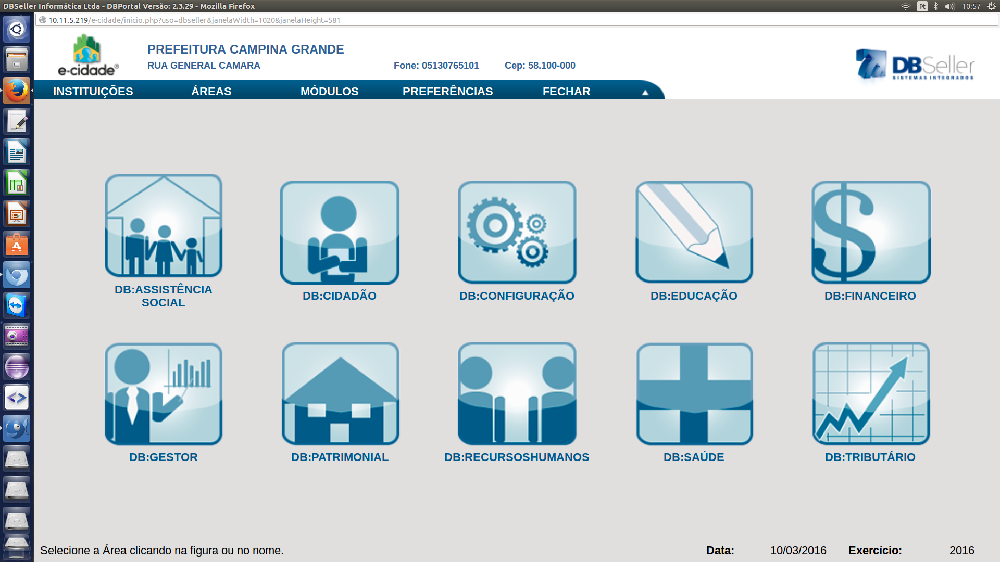

Assistência Social
Contempla Programas de Habitação e outros programas sociais, como Bolsa Família, Previdência Social, CRAS, todos gerenciados pelo Cadastro Único.
Cidadão
Serviços de ouvidoria on-line da prefeitura, como acesso fácil a documentos e planilhas, Portal da Transparência, Legislação Municipal, Certidão e outros documentos.
Configuração
Disponibiliza serviços de configuração geral do software, como permissões aos usuários, cadastros de entes, órgaõs ou departamentos do município, consultas de acesso, estrutura do sistema.
Educação
Gerencia as partes integrantes do sistema de ensino municipal, desde as esferas mais altas, como a secretaria do município, em todas as suas competências básicas, passando pelas escolas e biblioteca, até os serviços de assistência, como alimentação e transporte escolares.
Financeiro
Oferece a gerência das finanças do município, gerenciando projetos no orçamento e as arrecadações e saídas na tesouraria, bem como avaliação de empenho e contabilidade, e gerência dos gastos e custos da prefeitura, com geração de documentos e planilhas a partir de estimativas e dados inseridos.

Gestor
Armazena indicadores das diversas áreas do sistema para avaliação do gestor em exercício.
Patrimonial
Realiza a gerência integrada de contratos, licitações, compras, frotas e quais quer propriedades da prefeitura, bem como classificação do patrimônio existente.
Recursos Humanos
Gerência eficiente dos servidores públicos municipais, sindicatos existentes, folhas de pagamento e benefícios, e outros tipos de consultas, como financeiras e por cargos.
Saúde
Disponibiliza um cadastro eficiente de pacientes na rede municipal de saúde, facilitando o agendamento de consultas e exames, a emissão de fichas de atendimento ambulatorial, gerência de visitas das equipes de PSF, uso das farmácias e laboratórios do município, procedimentos de vacinação, entre outros.
Tributária
Abrange todas as tributações e impostos previstos na lei do município, gerenciando junto a um cadastro sócio-econômico e controlando os serviços de fiscalização.